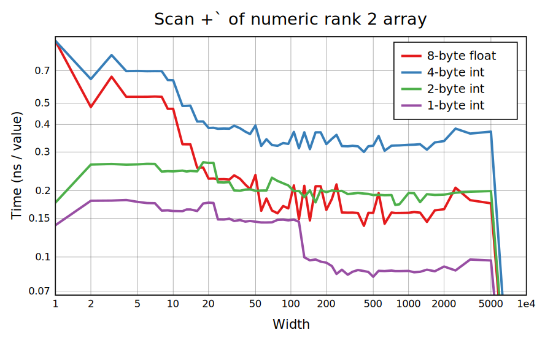
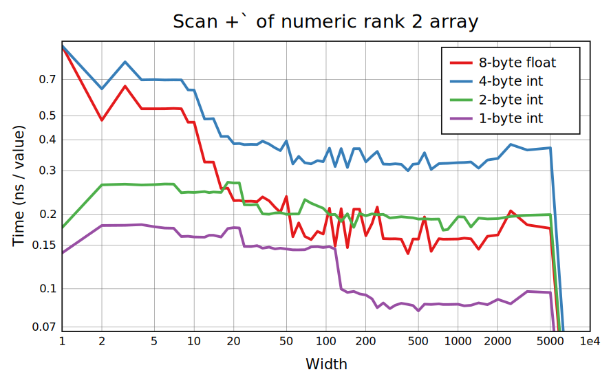

Scans behave a lot like folds in terms of requirements, but are much slower because of the need to compute and output intermediate results (while a fast ordering for an associative fold won't combine everything completely until the end). Like folds, +`, ⌊`, and ⌈` are the only important non-boolean cases, with ×` also used but hardly ever on long arrays. These three have SIMD code and others call one step at a time. Furthermore, ⌊` and ⌈` have code to quickly skip past regions with no new minimum or maximum, which applies to the random benchmarks here; the performance on a generic array can be slightly over 2x worse.
Functions ⌊` and ⌈` are exactly associative and have no overflow, so the implementation works out nicely. The prefix sum has to deal with overflow, which slows it down for integer inputs, and has to go in order for floats because float addition isn't associative (although 32-bit ints do overflow to floats, addition on them remains associative as long as the result is in integer range, so this case could be improved). However, the factor of 2 to 3 loss in performance from an in-order scan isn't as bad as the nearly 10x for fold.
Typical boolean scans ∧∨≠+ are handled well: ∧∨ search for the first 0 or 1, ≠ uses carry-less multiply, and + has SIMD code. The scan <` is notable as a way to turn off every other 1 in groups of 1s, and has word-at-a-time code that uses the carry of addition (and a lot of bit manipulation) to do this. Less common scans =≤≥>- are implemented in terms of the others, which adds slight overhead.
High-rank (column-wise) scan is equivalent to rank-1 if the cell size is 1 element, and a no-op if the length is 1. Operands ⌊⌈+ on numeric arguments are handled with SIMD, but using only SSE for narrower widths with 1- and 2-byte values. +` tests for overflow and simply widens and retries if that fails. As in the rank-1 case, for floats it suffers from non-associativity, but not as much because the different columns are independent.
Boolean operands ∧∨≠ have implementations based on 64-bit words that auto-vectorize for long enough rows, and =` does ≠`⌾¬. The same carry-less multiply code used for ≠` on lists also covers any divisor of 64 by passing in different mask data. And + immediately widens to 1-byte int. We also see some un-specialized arithmetic, which for very short rows goes down the fully generic path of a function call per element, and otherwise is done with a function call per row.
For long rows, leaving it to Cells to call each scan individually is mostly fine. We do miss a chance for parallelism for floating-point +`, where a single scan is latency-bound. For short rows there's a generic path that evaluates one element at a time but with less per-row overhead. It's not quite flat because an n-element row only takes n-1 evaluations; the width-1 case in particular is a no-op.
Common boolean scans have dedicated SIMD implementations using various bit-bashing tricks, with segmentation masks for short strides; here divisors of 32 are faster because no data has to cross between words.


 
